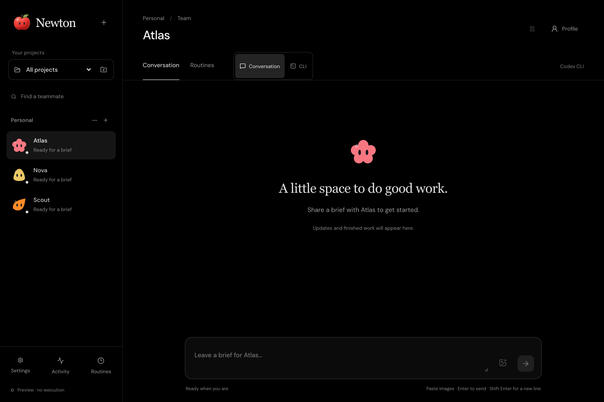

Context has a home.
Each teammate keeps its own instructions and provider session. Organize your teams by project, and pick up where you left off.
A little space for big ideas
Your AI team, with a place to call home. Bring Codex and Claude together in a quiet Mac workspace built for work that keeps moving.
Meet your new teamMade for macOS · Early release
01 / A PLACE TO THINK
Give each teammate a role, a workspace, and a little personality. Come back to the same conversation, with their instructions and session ready to continue.

02 / BUILT TO STAY WITH YOU
Each teammate keeps its own instructions and provider session. Organize your teams by project, and pick up where you left off.
Let teammates hand off tasks inside a project. Codex and Claude can work together, with results finding their way back to the teammate who asked.
Set a routine for the work that repeats. Schedule it daily, weekly, or your way. Newton keeps working when you close its window, while your Mac stays awake.
SMALL APP. ROOM TO GROW.
Newton is taking its first steps on macOS. A local desktop home for your team, powered by the Codex and Claude accounts you already use.
Take a closer lookEarly release for macOS 14+. Requires an installed, signed-in Codex CLI or Claude Code. A public download isn’t available yet.